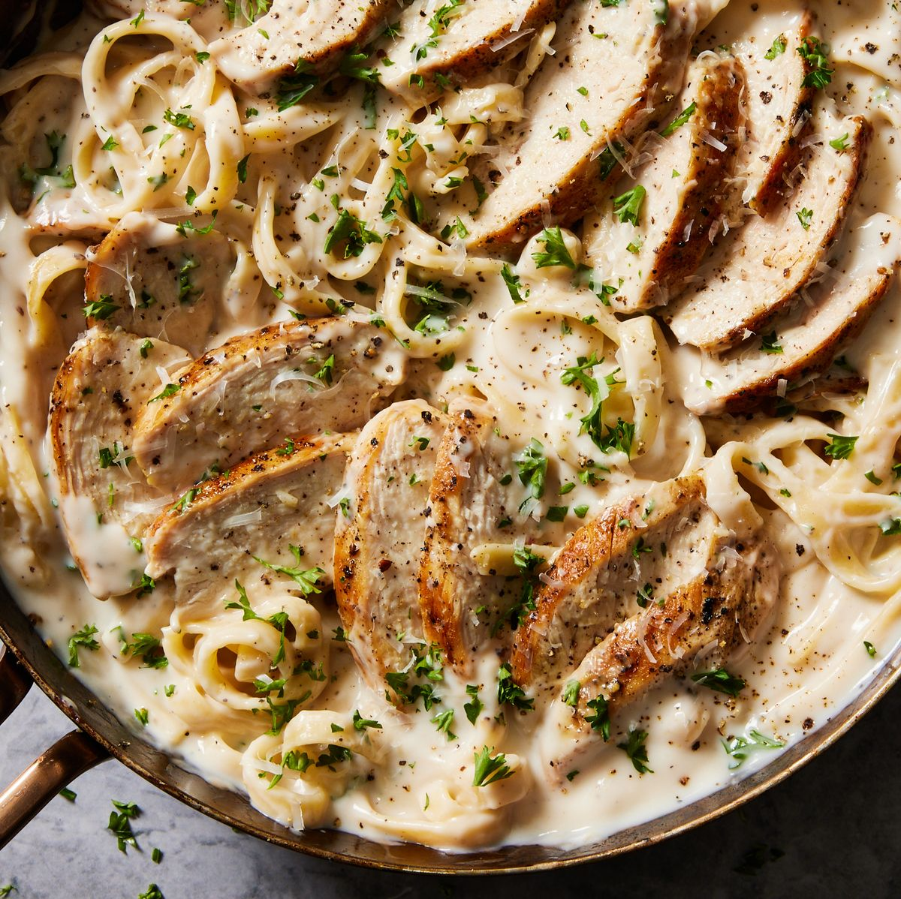

Chicken Alfredo

Description
This chicken Alfredo recipe with jar sauce is a quick and easy dinner for those hectic nights. For extra flavor, cook the chicken with lemon pepper and seasoning salt.
Ingredients
1 pound uncooked fettuccine or linguine
2 boneless chicken breast halves, cooked and cubed
1 (16 ounce) jar Alfredo-style pasta sauce
1 (10 ounce) package frozen mixed vegetables
1 (4.5 ounce) can sliced mushrooms
Steps
Fill a large pot with lightly salted water and bring to a rolling boil. Cook fettuccine at a boil until tender yet firm to the bite, about 8 minutes. Drain well.
While the pasta is cooking, place cubed cooked chicken, Alfredo sauce, frozen vegetables, mushrooms, and milk in a large saucepan over medium-low heat. Cook and stir until chicken is heated through and vegetables are tender.
Serve warm Alfredo and chicken sauce over cooked noodles.
Home